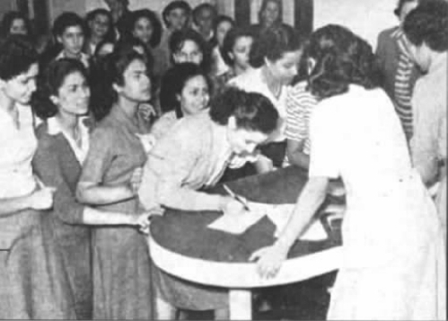
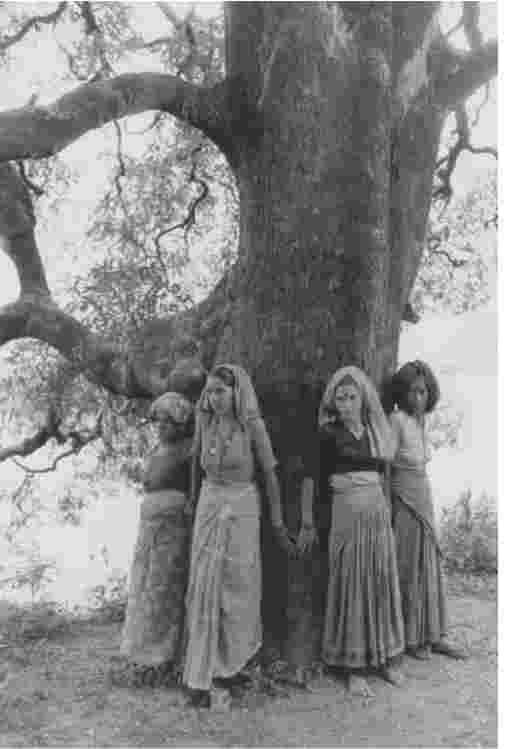
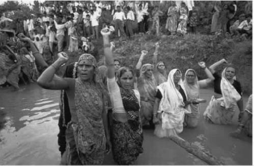
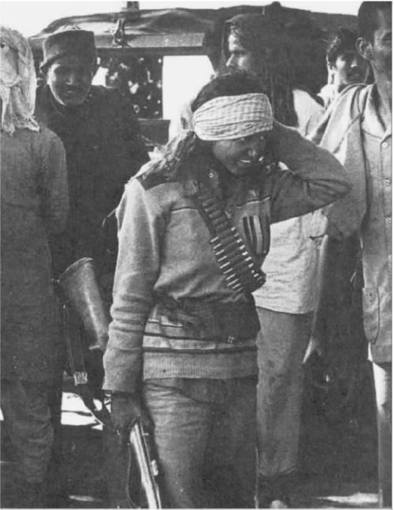

当甘地离开修行的居所时，女性都被激怒了。因为她们把一切都提前计划好了，包括行进的路线、食宿的地点，以及最终他们举行示威活动的海滩。为什么他不要女性参与其中，拒绝与她们同行呢？过去，在他发动的政治活动以及他对政治的解释中，他一直努力要把女性放在中心的位置上。他积极鼓励女性参与政治活动，对女权主义者所从事的事业也持认同态度，而且认识到了女权主义者使用政治策略的潜力。他过去常说，他的政治活动主要是受到了支持女性参政的英国女性和北爱尔兰新芬党的激励：要使用道德策略，而不要诉诸暴力。他赞同只采用停食、绝食抗议和游行这些非暴力手段。甘地绝不是第一个给弱者的斗争手段（这种斗争手段是每个人都拥有的）施以政治色彩的人。
尽管纳拉金尼·奈都 [5] 甚至米拉·本多次规劝过甘地，可他仍然坚决拒绝女性参与到其中来。那天早晨，男人们都离开家门，朝海边走去。他们身着浆洗过的衬衫，戴着帽子，拄着女人们为他们削好的长手杖。女性又一次被拒绝参与这种政治活动，她们不得不留在后方，等候消息。全世界的目光都在关注着，摄影记者也已准备就绪，但是看不到任何女性的身影。然而1913年在南非时，甘地本人确曾请求德兰士瓦省的女性在凤凰农场采取非暴力不合作的举动，而那样做将会使她们遭受牢狱之灾。她们确实也付出了代价，一名来自约翰内斯堡的十六岁女孩献出了自己的生命。甘地注意到，在南非的印度女性受到了监禁，这件事不但“触动了生活在南非的印度人的心，而且也深深刺痛了生活在印度的印度人民”。他还观察到，在“消极抵抗”（该词最早由室利·阿罗频多提出）中，女性作为其中的催化剂会起到更加积极的效用，而且他认为女性最适合这种非暴力不合作运动。非暴力不合作运动让女性参与了进来，并且使她们成为这项激进政治活动的中坚力量。在巴德利运动中，巴克迪巴、莎达·莫塔和米迪本·珀蒂等众多女性尤其引人注目。甘地不认可生活在大都市的政治精英，而是对生活在城市边缘的人，比如农民、比哈尔邦的蓝领工人以及广大的女性持认同态度。他号召使用印度的土布，反对从英国的兰开夏郡进口廉价的棉布。他号召人们（至少是那些可以买得起的人）通过穿着表明自己的政治立场。
甘地通过亲自纺线织布使其所发动的政治和文化运动具有了很强的象征意义。spinster [6] 这个词的原义就是“纺织”，正像这个词所暗示的那样，我们都知道纺线织布是传统女性所从事的劳动。甘地经常使自己显得更像女性，而不是既具有男子气又带有女性特点的纺织工：
然而，当她们特有的性别特征激起了男孩子们的欲望时，甘地对此的反应使他更像一位道德上极为拘谨的虔诚教徒：
甘地总是喜欢放弃，喜欢弃权——如果开始就这样，那当然很好。他希望由他提出来的“精神力量”这一女性原则能被男女共同遵守，因为他惧怕女性的性别特征；他喜欢使用“姑娘”或“姐妹”这种称呼，而不用“妻子”之类的叫法——他也的确是这样称呼自己的妻子的。即使甘地本人在使用女性的斗争方式时，他也往往用传统的视角来看待女性。他的许多关于女性特征和家庭角色的观念，其实就是对传统的印度教和道德要求极为严格的维多利亚时期女性观念和女性气质的进一步强调。甘地总是宣扬诸如妻子要忠于丈夫一类的传统价值观。他虽然是一位改革家，但在女性权利方面，他并不像尼赫鲁那样习惯性地赞同革新的思想。共产主义者的传统观念认为赋予女性权利毫无疑问是消除不平等的制度结构的一部分，而尼赫鲁很明显受到了这种观念的影响。
但是，甘地还是非常有预见性的，他意识到如果不进行激进的社会改革，反殖民政治活动的作用是非常有限的。他并不是一位寻常的反殖民民族主义者。甘地想改革印度社会、印度的种姓制度、社会和性别的不平等状况，而且还要把英国殖民者赶走。他预见性地提出了许多后殖民女权者所使用的政治策略，并在各个方面为女性争取权利。他提出来的非暴力理论并不只是针对英国人的一种策略，同时也是男女平等、环境的可持续发展以及饮食习惯和天然药材对人体进行温和调节的基础。就此而言，甘地称得上是第一位环保政治家。他观察到女性所进行的政治活动要比大多数民族主义者的活动更为激进，她们拒绝对公共和私人空间进行划分，此举触犯了殖民当局的政治权威。
性别和现代性
同时，对女性来说，甘地对现代性的批判可能是有问题的，而具有现代性的政治活动对女性更加有利。实际上，现代性的许多特征就是女性的发明。现代性可以用它自身的技术和关于平等、民主的政治概念来界定自己，这些政治概念必然包含着父权制的终结以及让女性享有平等的权利。另一方面，对于许多男性民族主义者来说，现代性就是对经济、政权和公共领域的重新定位。即使是在今天，正如印度小说家阿兰达蒂·罗伊所尖锐指出的那样，印度教徒对真正印度性的追求也不会包括拒绝对手机、火车、飞机或投放原子弹的火箭的使用。在1909年出版的《印度自治》中，甘地把对西方文明的批判扩大到对科技的批判，他抵制火车以及殖民现代性的各个方面。因此，实际上他比现代的具有印度教特性的理论家更激进。他的思想就是“可持续性发展”（可能性的艺术）这种现代观念的先导。
特里·T.名——哈，《女性，本地，他者》（1990）
当民族主义者把目标从改革运动转向文化复兴时，女权主义者就开始与之分道扬镳了，她们继续利用现代性的因素来为自己的政治目标服务。文化民族主义者往往在技术方面并不反对现代性，而只是反对现代性对女性的影响。女性通常被认为是代表民族文化身份的主要依靠力量，而当前的民族文化身份是从过去的社会中追溯而来的。在男性民族主义者看来，相对没有受到殖民控制的家庭才是传统价值观、文化以及“民族”身份的捍卫者。这种身份是按欧洲模式所创造出来的反抗欧洲宗主国的新事物。女性和现代性逐渐被看作是对立的，结果就造成了民族解放的目标往往不包含女性期望的所有进步性的变化。当殖民政权试图要宣布诸如童婚、寡妇火焚殉葬以及阉割女性外生殖器之类的习俗为非法时，以上这一点在印度和非洲就显得格外具有戏剧性。保留这些习俗成为当地民族主义者重要的斗争目标（尽管甘地或尼赫鲁并非如此）。
殖民政权对压迫女性的社会习俗的干预被称为“殖民女权主义”，也就是说在这一点上，殖民政府代表了女性的利益，它宣称这样做是出于人道主义的原因。有时这些措施会同时作为殖民控制的形式起作用。殖民当局往往对这些干预持赞同的态度，它们认为这些干预是改变当地社会价值观的重要方式，而且这些建立在社会价值观基础上的传统反对它们对当地的统治。法国在马格里布地区所实行的强迫女性摘除面纱的殖民政策就是一个明显的例子。在所有情形下都完全可以预见的是，这些法令将会成为民族主义者抵抗的焦点问题。然而矛盾的是，对于女性来说，殖民者的意识形态代表的可能是自由的新形式。所以，生活在殖民主义与反殖民的民族主义夹缝中的女性更加矛盾。这也意味着在后殖民时代，当女性同殖民主义的残余作斗争时，她们也在不断地被指责她们自己的脑子里也输入了西方的思想意识。西方女权主义者、人权组织和由福特基金会资助的非政府组织的善意干预，有时却使当地女性的生活变得更加复杂。各种形式的发展最好是来自基层群众，而非由统治阶层强加而来。
如果你认为女权主义是一种西方的思想，那么你将不得不得出这样的结论：现代性本身就是西方所独有的。从历史角度看，女权主义确实是开始于18世纪的西方政治运动。女权主义的开始和现代性的开始是很难区分的。现在人们认为，现代性并不是由西方发明的，它是西方同世界的其他地区相互影响、相互碰撞的产物，包括殖民主义的经济剥削（殖民主义的经济剥削作为现代资本主义发展的动力，最早为欧洲资本主义提供了充裕的资金）。从那时起，随着时间和地区的不同，现代性在很多方面得到了发展，女权主义的情况也是如此。和现代性的其他方面一样，两个世纪以来，非西方世界的女权主义所信奉的原则也发生了变化，与以往相比产生了一些细微的差别。现在，所有的政治活动，无论是女权主义的还是宗教激进主义的政治活动，都是其所处时代的产物，因此都是现代性的一部分。现在争论的焦点不是现代性与其对立面之间的问题，而是对现代性的不同解释版本的看法问题。对现代性的某些看法被认为是提供了西方模式以外的选择对象，当然这种对于西方模式的理解并非总是准确的。
独立后的女权运动
在男性和女性为共同的目标而进行反殖民斗争时，两者间存在的许多差异相对来说仍未完全暴露出来。但是，当国家获得独立后，根本的冲突就明显地显现出来了。阿米纳·赛义德在一篇文章里提到了1956年埃及女性志愿参军的事情，文章用了一个简单、准确的标题——《女性的角色并不因和平而告终》。对于所有的女权主义者来说，独立时的权力转换和国家主权的获得虽然合乎了她们的心意，但她们的要求并非仅限于此。这仅仅是漫长斗争过程中的一个阶段而已。然而对男性而言，国家获得独立则意味着国家进入了后殖民这个可以明确表示的新阶段，而对女性来说却并没有这样的突破。因为斗争仍在继续，现在她们仍要为反对不再需要女性支持的父权社会而斗争。独立往往意味着权力的转移，但并不是把权力转交给新建立起来的主权国家的人民，而是转交给当地的精英阶层，这个精英阶层继承了军队、警察、司法、行政以及发展机构等整套殖民体系。许多国家为了取得国家主权付出了大量的人力和物力，而一旦国家获得了独立，女性的政治目标不得不再次被人们提及，于是又一场解放斗争开始了。因此，后殖民政治通常和女性的殖民斗争而非男性的殖民斗争有更多的相似之处：政治上的平均主义支持文化上的多样性，而非民族主义所要求的文化上的共性。
在后殖民时期，宗教民族主义的显著发展——这种发展在某些方面甚至界定了后殖民时期——事实上已经把女性置于一种与殖民时期相似的境地之中。然而，并不像西方的自由主义者所想象的：伊斯兰国家的女性受到了宗教激进主义或伊斯兰教的压迫。世上并不存在单一的伊斯兰教，也没有单一的伊斯兰宗教激进主义。在伊斯兰国家，女性的定位是与以下几点相联系的：她们自己的文化、历史，她们与西方和西方殖民势力的关系，她们围绕伊斯兰教和伊斯兰法律作出的解释，以及她们在当今社会所扮演的角色。

图15 埃及的女志愿者积极参加反对英国占领的大众抵抗运动。
三大洲的许多国家激烈反对这一观点。可与此相反的是，“西方”也并非持有统一的观点。甘地就清楚地看到西方内部的裂痕，并主动地加以利用，为印度政治上的发展带来了好处。
女权主义和生态
尽管现在甘地的影响在印度急剧下降，但是，他的一些政治哲学要素仍然在继续向前发展。例如，印度主要由女性组织的契普克运动就能说明这一点，此运动的根源已经被范达娜·席瓦直接追溯到了运动的发动者米拉·本那里，而米拉·本却是和甘地关系最为亲近的女性之一。席瓦认为，国家的殖民化同时引起了诸如森林之类的自然资源的殖民化，而后又引起了精神上的殖民化：人们在面对农业和环境问题时，想到的只是技术革新和以市场为导向。早在殖民时期，农民和部族就已经开始对滥伐森林进行过抗议。当时木材被用作军事和工业目的，人们并没有考虑过滥伐森林和荒漠化所带来的长期影响或破坏当地经济和生态所引发的后果。
在20世纪40年代后期，即甘地遭暗杀之前不久，米拉·本搬到喜马拉雅山脚下的一个农场上定居。她逐渐开始关注当地一年一度的洪灾，她发现引起洪灾的原因是滥伐森林以及种植非本地品种的树木，尤其是松树。为了能专心研究森林问题，米拉·本建立了一个叫作戈帕尔的修行所。在那里，她研究了当地的环境，并且花了大量的时间从熟悉当地情况的农民那里了解了许多关于当地情况的资料。在聆听当地民歌和民间故事时，她注意到其中的许多歌曲和故事都提到了一些基本上已经消失了的树木和其他植物。她断定当地出现的生态问题是由栎树的消失所造成的。栎树对生态环境和当地经济的发展起到了积极的作用，而像松树这种最近纯粹出于商业原因而被种植的常绿植物，除了提供松脂和纸浆这样的商品外，对当地的生态经济没有任何益处。不久其他一些甘地的追随者，例如萨拉拉·本和桑德拉·巴哈古纳，也加入到了米拉·本的工作中，他们建立了新的修行所。
范达娜·席瓦
随着这场运动的深入发展，重大的分歧开始出现，而这个分歧就本质而言是由性别差异造成的。最初，当地许多效法甘地的组织把工作重心都放到了建立合作社以及维护当地人民而不是大型商业公司的权利方面，这些大型商业公司把木材作为商品作物加以开采。席瓦指出，这主要是男性的观点。而负责耕种口粮、采集燃料和饲料的女性并没有受到这种短期利益的诱惑，她们并不想种植单一品种的经济作物而获益。她们注重的是当地可持续发展的生态需要。在可持续发展的生态中，植物、土壤和水构成了一套复杂而又相互联系的生态系统。因此而出现的分裂并不仅仅存在于当地人和外地人之间，也存在于村庄内部的男性和女性之间。女性对整个体系的原则提出了异议，她们指责男性在意识形态上被短期的市场商业价值殖民化了，他们就像在父权社会控制女性一样，试图把自然控制在自己的手中。女性并不想通过科学手段控制自然，从而直接获益；她们的目标是要使整个森林系统能够自我支撑，自我更新，使之能够保持住水和食物资源。她们长期担当着耕作者和粮食生产者的角色，这使她们的家人能在这套系统中生存下来。这也表明，女性对耕作以及各种植物的药用和营养价值更为熟悉。
因此，女性与像巴哈古纳那样被女性所说服了的男性一起，共同构成了契普克运动的基础。契普克运动于1972——1973年开始于印度西北部的杰莫利地区，当时当地的人民成功地组织起来，抗议通过拍卖把三百棵白蜡树出售给体育用品制造商，而政府却禁止当地的合作社为制造农业生产工具而砍伐少量的树木。这场运动很快就扩散到其他地区，例如卡纳塔克邦，人们开始广泛抵制将木材砍下来卖给商业公司。契普克是“拥抱”的意思。这个名字源于三百年前拉贾斯坦邦的比什挪依人最初采用的一种方法。在昂瑞塔·德维的领导下，比什挪依人通过拥抱神圣的科耶里树来抵制对这些树木的砍伐，在斗争中他们甚至牺牲了自己的生命。实际上，村民们通过拥抱树木来阻止伐木者砍伐树木这样的事例在现代几乎没有了。然而，这场运动的名字总是让人觉得，即便在这些积极的参与者受到威胁的时候，他们也会采取拥抱的做法。拥抱树木的想法在象征层面也强烈地体现出人和树的关系。面对越来越多的山崩和洪灾，契普克运动的积极参与者在米拉·本早期思想著作的激励下，把这场运动推向了更为激进的层面。她们鼓动在北方邦全面禁止对森林的商业采伐，后来又反对中央政府实行的根本不考虑地方需要和环境的发展计划。
这些运动都是由当地的基层群众组织和执行的。像哈玛·德维以及桑德拉·巴哈古纳这样的个人组织者挨村挨寨地宣传运动纲领，就组织运动的方法提出建议。尽管一些人在大多数基层群众运动中起到了领导者的作用，但与传统政治组织的政党领袖相比，他们对公众的影响并不是很大。契普克运动是积极参与者共同努力的产物。住在加瓦尔的喜马拉雅山居民一起成功地阻止了对本地区森林的滥伐，取得了非凡而广泛的影响。从那时起，契普克运动就开始把斗争的目标转到把森林作为一种生态和社会系统而加以保护上来。逐渐地，对森林的保护发展成为一种内容更为广泛的、可持续发展的生态政治哲学，而这种政治哲学也成为当地人民共同价值观的核心。
这种可持续发展的政治哲学究其本质来说仍是效法甘地的（尽管甘地关注的是物质的、实践的和社会的需要），而且在对现况的回应中甘地的思想得到了进一步的深化。正如萨拉拉·本所解释的那样，这种政治哲学在更广的层面上包括了对一系列目标的追求：正义、道德原则（比政府要求得更高）、在处理环境和社区关系上采用非暴力的方式、自给自足以及当地人能享有更大的权力（反对中央集权、腐败、剥削、权力的丧失以及饥饿）。总之是要使家庭伦理观与市场价值观之间的分歧消失。
契普克运动的参与者认为，由中央或地方政府管理的、建立在林业科学标准基础上的造林项目既破坏了森林生态种植的多样性和公众的资源，也破坏了当地人的食物、燃料、建筑材料、药材等的来源。一个典型的例子就是忽视当地树种，却大规模地种植桉树等单一品种的非本地树种。因为桉树不能产生腐殖质，所以不能保持土壤里的水分，从而破坏了维持植物、动物和人类生活的食物系统。为达到殖民化的目的，殖民者使公地私有化并引进外来树种，损害了当地人的利益，夺走了他们的生活财产，使他们的生活不能维持下去。最终这些项目都是通过当地的政府官僚组织来管理的，这些政府官僚组织使当地的农民处于当权者、特权阶层和财产所有者这些腐败阶层的共同掌控之中。

图16 契普克运动中的抱树者，印度北部，1997年。
20世纪70年代以来，在杰莫利地区、卡纳塔克邦、加尔克汉德以及其他一些地区，女性、当地村民和部落进行的种种斗争成功地阻止了众多这样的行为和计划，而且他们还提出了一整套的环境政治哲学。范达娜·席瓦和其他一些生态女权主义者进一步把这些基本的原则向前推进，开始批判那些被她们称为“不良发展”的行为。她们把这种工业发展的模式称为是一种新的殖民（“独立”后殖民主义的继续）。这种“发展”的典型特点是：邦一级的政府负责组织，世界银行提供资金援助，种植的是西方最新发明的转基因作物和树木，化肥都是根据西方最新的观点施用的。以市场为导向重新分配本地土地的想法，仅仅着眼于为购买土地而能担负起大量债务的少数人，而穷人赖以获取口粮和燃料的公共土地却被私有化了。这些计划的多次失败——直接失败或没有预料到具有破坏性的副作用——甚至已经使从事发展研究的经济学家开始认真了解当地的情况，而这些情况过去被人们视为原始的、不真实的和不“科学的”，因而长期被人们所忽视。这些未被人们认识到的情况激起了抵抗性的政治活动：反对后殖民国家的中央集权，反对伦理道德和市场惯例在意识形态上的殖民化，还反对从外地引进的、不适应当地情况的植物物种对当地土地的殖民化。
由农民运动所构成的这些政治斗争在印度和其他许多地区已经得到发展，而且令人瞩目的是处于斗争最前沿的往往是女性。在印度它们以所谓的女权主义的可持续发展框架为基础，得到了充分的发展。但是，像契普克运动这样单一的例子不能被当作普遍的模式来加以概括。在印度，对于居住在山区和森林里的人而言，他们的状况是某个社会特有的，而这些群体中的女性并不能构成女性整体范畴的基础。然而，如果维持家庭生活的农村女性直接受到了环境退化的影响，那么这些斗争的性别力量就会明显得到加强。她们可以用相似的激进策略来反击对环境的不同威胁。例如，纳马达反水坝组织 [7] 就格外勇敢并坚持不懈地反对兴建属于庞大的纳马达河谷发展工程一部分的萨达萨罗瓦水坝。纳马达反水坝组织也得到了激进作家阿兰达蒂·罗伊的公开支持，而且很清楚这个组织是按相似的原则活动的。这项巨大的基础工程要耗资数十亿卢比，而且还要让当地的土著居民和生活在森林中的游牧居民共二十万人移民，这要付出巨大的人力和环境代价。对受灾民众的无视已经到了极端冷酷的地步。经过长期的斗争，纳马达反水坝组织成功地以对人类和环境有不利影响为由，使为这个项目提供资金支持的世界银行撤出了。但此后古吉拉特邦的政府宣布政府将会出资以弥补世界银行撤走的资金。经过裁决，印度最高法院于2000年10月驳回了纳马达反水坝组织提起的诉讼，该组织试图通过合法的抗议阻止该工程继续进行下去。这一工程重新开始了无序的、疯狂的破坏性进程。斗争仍在继续。
其他一些类似的例子还包括对于破坏亚马逊热带雨林的抗议，还有由肯尼亚的旺加里·马塔伊在1977年所发起的绿带运动，他是在听取了当地女性对当地环境恶化的关切之后，发起这一运动的。它们表达的忧虑涉及全世界的农民都常见的问题：以前他们可以在当地拾柴，而现在他们不得不到数英里之外的地方去拾柴；他们种植的庄稼产不出足够吃的粮食，孩子们因此而营养不良；洁净的水源也干涸了。旺加里·马塔伊发起了种植树苗的植树运动，以便能给人们提供柴火、树荫，为庄稼提供腐殖质以及防止土壤退化。到2000年，肯尼亚人民已经种植了一千五百万棵树。同时，马塔伊领导人们反对为发展建筑业和种植短期的出口作物而对森林进行砍伐。现在绿带运动已经扩展到非洲的其他国家和世界各地。
这类的生态运动确实产生于一定的内在联系之中，对某些因素的强调是以牺牲另外一些因素为代价的，如在契普克运动中就存在着阶级和种姓的不平等。可以把相似的一些运动提出来，放在后殖民政治下加以考查。就那些在印度北部林区生活的人而言，他们的生活情况和需要与伦敦东区贫民窟里的移民的生活情况和需要可能是完全不同的。然而，他们所进行的斗争活动都受到所有属下阶层人民（并不仅仅是那些被划分为工人阶级的产业工人）对权力和需求的共同要求的激励。他们要求改革目前不平等、不公正的政治状况，他们认可文化、社会和生态多样性的原则。这些运动通常是由基层群众，而非国家政党或国际性组织发起的，其中也有一些在两者间转换。这些运动之间不断加强的联系也为彼此增强了政治力量：尽管这些运动的组织者对科技持怀疑的态度，但实际情况是网络使这些基层组织能更加有效地计划和开展运动。网络给它们提供了便捷的联系方式，使它们能与国际机构，慈善机构，以及救援组织、绿色和平组织、乐施会、人权观察和大赦国际等国际组织保持日常的联系。这些国际组织可以向它们提供资金或当它们在当地法院或国际法院提起诉讼时，向它们提供法律上的帮助、外界的监控，并在战略性的关键时刻唤起全世界人的关注。自下而上的全球化运动与自上而下的全球化运动和控制力量相抗争，而且这种抗争力量越来越强。
后殖民女权主义是否可以同“第三世界女权主义”或“第三世界政治活动中的女性”之类的范畴加以区别呢？从广义上讲，后殖民女权主义包括所有第三世界中的女性对父权社会中占统治地位的意识形态的反抗。这些激进的政治活动包括与当地权力机构进行抗争，或对种族主义者和第一世界中的人们（包括女权主义者）的欧洲中心观发起挑战和提出质疑。在后殖民国家，后殖民女权主义认为，它的政治活动是在这样一个框架下展开的：对殖民主义的积极继承，以及当地的精英分子对殖民者的基础设施的继承、接管或占有。所有为平等而斗争的女性都反对这个框架中的诸多障碍，并在后殖民时代同这些现实情况进行着激烈的斗争。女性斗争很清楚地表明了这样一个情况：反殖民斗争反对的是殖民统治，其政治目标是要争得国家主权；而后殖民斗争反对的是后殖民政权，反对的是推行新殖民主义的西方国家的利益。大多数有关后殖民主义的学术著作强调的是对反殖民过程的历史性分析，而不是后殖民国家中反抗当代种种权力的政治哲学。女权主义者所采用的则是相反的方式。

图17 “打倒你们这些大坝建造者”。当地女性组织起来反对建造纳马达水坝，默黑什沃尔，印度，1999年。
对“后殖民”这一术语的普遍使用意味着，就其历史意义而言，后殖民这一概念可以在众多不同的政治活动中加以使用。后殖民国家的任何政治行动都可以被认定为具有后殖民性，但这并不意味着这些行动包含着后殖民主义的政治色彩。而许多有女性参与的群众性政治运动也不一定掺杂着不同的性别观点。即使那些女性的活动可以从境遇和意识形态的角度被准确地描述成具有后殖民的特性，也不能说她们具有相同的特点。以突尼斯两个著名女律师——哈蒂亚·纳斯哈维和吉赛尔·哈里米工作上的不同为例，纳斯哈维一直在突尼斯这个后殖民国家为反抗侵犯人权而斗争，可她并没制订任何明确的女权主义的运动计划；哈里米则从突尼斯移居到了法国，但在反殖民问题和女性问题方面，她同法国的殖民者和后殖民者进行着斗争。可以说这两位女性的工作都具有后殖民色彩，但作为女性中的活动家，她们的政治活动仍有所不同。
佳亚特里·查克拉瓦蒂·斯皮瓦克，
《在他者的世界里》（1987）
1998年2月11日，突尼斯一个平常的早晨，一个摄影记者拍下了这样的场景：哈蒂亚·纳斯哈维站在空空如也的办公室里，原来的办公设备、档案和计算机都没了。但这并不是搬家。警察搜查了她的办公室，把她的档案、法律文件、书籍和计算机都带走了。
四年前，她的丈夫哈玛·哈玛米被指控是突尼斯共产党党员，所以他躲藏了起来并被缺席审判，但他最终在苏塞被捕，遭到警察的折磨，随后被关入巴格内监狱。大赦国际受理了此案，二十一个月之后他才被释放。1998年2月大学生罢课并举行示威游行，几个学生和早已被列入当局名单的可疑分子（包括哈玛米和他九岁的女儿）被暂时关押起来。获释后哈玛米又过起了逃亡生活，此后再次被缺席审判。由于他的家人全都遭到当局的不断骚扰，他于2002年1月15日公开露面，开始服刑。
哈蒂亚·纳斯哈维为反对腐败的后殖民政权而进行着斗争，在这样的政权之下当权者会对其政治对手施行任意的、不公正的监禁和折磨。作为一名律师，纳斯哈维为这些遭受监禁的人辩护，当然最主要是为她丈夫哈玛·哈玛米辩护。哈玛米是突尼斯共产党——一个未取得合法地位的政党的创建者之一，而且是遭禁的《埃尔巴迪尔报》的执行编辑。2002年6月26日是世界禁止酷刑日，在这一天，纳斯哈维宣布她开始进行绝食抗议。绝食抗议的目标就是要求当局立刻释放她丈夫，并且抗议自从宰因·阿比丁·本·阿里总统当政以来她丈夫遭受的肉体和精神上的折磨，以及由于警察的不断骚扰而使她女儿“经常遭受精神折磨”。持续了三十八天的绝食抗议引起了突尼斯以外的国家的广泛关注，在讲法语的国家里，人们更加关注她丈夫的案情以及突尼斯国内对人权的普遍侵犯。迫于外界的压力，9月4日突尼斯当局有条件地释放了哈玛·哈玛米。哈蒂亚·纳斯哈维同突尼斯政府的不公正进行斗争，她的勇敢斗争当然称得上具有后殖民色彩。现在她仍在继续斗争，拒绝放弃。在这种情况下，她把斗争的中心放到了政府权力的滥用上，她将政权对于人权的侵犯作为斗争的出发点（毛泽东可能会这么总结）。这与后殖民的政治活动相一致，但其本身并不是源于后殖民女权主义者的观点。埃及女权主义者奈娃勒·赛阿达微写的她在狱中的经历就与此不同。这同样也使人们想到昂山素季在缅甸为争取民主和人权而进行的斗争，不过她要在一个根据不同文化和道德原则构建的国家里建立西方自由主义的意识形态，毫无疑问，她的想法与甘地所提出的结合了法律要求的道德原则是一致的。
虽然吉赛尔·哈里米出生在突尼斯，但她却是在法国接受的教育，并于1956年取得了律师资格。之后她立即开始为阿尔及利亚民族解放阵线担当辩护律师。1961年她成功地为一名在法属殖民地阿尔及利亚受到警察折磨的阿尔及利亚女孩德雅米拉·布巴莎辩护，因而名声大振。这个著名的案子使她与西蒙·德·波伏娃和萨特结下了友谊，之后她还为巴斯克地区的恐怖分子出庭作过辩护。而且作为一名律师，她还就一些与女性有关的问题积极进行斗争，尤其值得一提的是1972年的博比尼堕胎案。1971年她创立了选择组织，该组织创建的目的就是为了为某些非法堕胎的女性（她们有意让公众知道她们曾经非法堕胎）进行辩护。这一组织随后开展的活动有力促使了法国政府于1974年宣布堕胎合法化。哈里米继而当选法国国民大会和法国驻联合国教科文组织的代表。2000年10月，她再次受到人们的关注，因为她要求法国人民承认并且面对法国政府曾对阿尔及利亚人民进行的经常性的折磨，呼吁总统和总理对此加以公开谴责。她迫使法国公众正视其殖民历史在后殖民时期留下的遗患。法国曾残酷镇压阿尔及利亚的独立运动，哈里米的举动使得人们对此事的道德标准重新进行了深刻的反思、改造和评价，而此事造成的影响仍继续在这两国之间回荡着。
因此，由于地点不同，后殖民国家女性的特定状况或者大都市移民的后殖民状况也有所不同，结果就造成了政治活动没有单一的模式。一种能指导道德规范和实践目标的、共同的、更加广泛的政治哲学使政治活动具有了后殖民的特征。作为一种政治哲学，后殖民主义首先意味着，那些发现自己在政治上和管理上仍处于别国控制下的国家要取得自治权。一旦取得了国家主权，后殖民主义就要求改变这个国家的政治基础，对那种约束性的、中心化的文化民族主义霸权进行积极地改造，这种霸权在反殖民斗争中可能是必要的。后殖民主义意味着：赋予贫困者、无依者以及社会地位低下者更多的权利，宽容差异和多样性，在民主和平等（这种民主和平等拒绝把西方异化了的思维方式强加给三大洲）的框架内确立少数民族的权利、女性的权利和文化权利。后殖民主义抵制各种形式的剥削（包括对环境和对人类的剥削），而且抵制单纯为了企业资本主义的利益而施加的压迫性行为。后殖民主义对伴随着企业资本主义出现的社会关系的商品化及个人主义至上的信条提出了挑战。后殖民主义反对任何形式的对贫穷者和无权者的剥削——从对自然资源的占用，到商品和作物之间不平等的价差，再到国际色情贸易。后殖民主义意味着任何人，包括男女老幼都能得到基本的安全、卫生、保健、食物和教育的保障。后殖民主义不但支持产业工人的事业，而且也支持下层阶级的事业。所谓下层阶级也就是指那些因为性别或种族而在社会生活中被边缘化了的社会群体，迄今为止他们仍不具备参与激进阶级的政治活动的资格。在鼓励个人的真诚和利他主义的同时，后殖民主义也对回归民族或文化的“真实性”提出了质疑，认为构建这种“真实性”带有可疑的政治目的。后殖民主义认为最有成效的思维方式是那些在消除权力等级的建设性对话中，跨越学科和文化，自由地相互影响的思维方式。
后殖民主义对属下阶层、农民、穷人以及被社会排斥的人表示出强烈的同情，这就使其远离了社会精英分子的高层次文化，同时也使其与这些属下阶层的文化和知识的关系更为密切。属下阶层的文化在历史上通常被认为是毫无价值的，但后殖民主义却认为这种文化具有丰富的内涵，而且这种知识是一种反传统的知识。后殖民主义的同情和兴趣集中到了处于社会边缘的人身上，那些人由于全球资本主义力量的发展而产生了文化错位，处于不确定的状态，这其中包括难民、从乡下移居到城市贫民区的人，还有那些处于社会最底层但是为了更好的生活而来到第一世界奋斗的移民。长期以来，后殖民主义意味着一种改变社会的政治，一种致力于消除社会不平等现象的政治，这些不平等包括世界范围内不同国家拥有的财富不同，国家内部的阶级、种族和其他社会等级不同，在社会和文化关系的各个层面上的等级不同。后殖民主义结合并吸收了来自激进社会主义、女权主义和环境保护等方面的因素。后殖民主义与自己所吸收的这些方面的不同之处就在于它有三大洲、第三世界和属下阶层的视角，而且它的重点也在于此。对于西方国家的人来说，后殖民主义就是对世界的颠覆。后殖民主义是用从下往上，而非从上往下的视角来观察和感知世界的。它的眼睛、耳朵和嘴巴是埃塞俄比亚的女性的，而不是外交官或大公司的首席执行官的。
在后殖民的政治框架中，性别是实现目标的一个条件。在后殖民主义中，性别政治的中心地位可以简单地通过与“第三世界政治活动中的女性”相比较来加以说明。“第三世界政治活动中的女性”是某个章节的标题，它出现在一本非常有影响的比较第三世界政治活动的教材中。现在存在一种大男子主义的观点，这种观点认为，现成的选民和第三世界的政治活动都已经存在了，女性通过观看自己在这个领域内的活动就可以得到充分的满足。政治暗含的意思就是，政治基本上是属于男性的活动和社会空间。这一章将会探讨女性是怎样在一个并不是由她们塑造的社会中发挥自己的作用的。还有一种后殖民观点认为，如果没有女性就没有第三世界的政治，而且女性已经在广义的层面上对政治的构成下了定义。因此，女性不仅已经成为政治活动中的积极参与者，而且她们显然也已经登上了自己的政治舞台。
传统的马克思主义分析方法总是强调在工厂工作的女工的作用，而自20世纪60年代以来，西方女权主义者却认为女性的家务工作也具有政治意义。但借助于心理分析和身份确认的手段，我们可以发现这样的观点更强调主体性和性别特征。后殖民女权主义的确注重分析后殖民环境中女性的紧张状态，无论是后殖民状况还是大都市都对她们造成了压迫。后殖民主义关注的中心并不是个人问题，而是那些对整个社区构成影响的问题。因此，后殖民主义更加关注那些为争取众多权利而开展的社会和政治运动，包括为争取物质、文化和法律权利而开展的运动，它关注法律、教育和工作方面的平等对待，关注环境保护以及西方之外的女权主义者遇到的价值观同她们希望遵守的价值观之间的差异。作为一种激进的政治活动，后殖民主义涉及的是基层群众运动，而不是政党的政治运动。这与当今人们对国家层面上的政党和政治组织的兴趣降低是相关联的。虽然后殖民主义没有必要像传统的政治活动那样停留在国家层面上，但也不是说后殖民政治活动在传统的政治空间中要避开政治干预。在概念和实践上，后殖民政治基本上是一种跨越国界的国际政治。面貌一新的三大洲并不是在政府层面上通过国家机构合作而产生的结果，而是通过普通人共同努力，结成联盟，跨越大洲，自下而上取得的成果。
后殖民女权主义从来没有作为后殖民主义的单独实体而行事，而是直接引起了后殖民政治活动形式和力量的变化。后殖民女权主义者把关注的焦点放到了一些突出的问题上，包括非西方的女权主义该如何平衡民族主义、社会主义的女权主义、自由主义和生态女权主义的政治要求，以及该如何对广泛存在的父权制提出挑战。父权制通常受到制度和法律上的区别对待，包括家庭暴力、性虐待、强奸、荣誉杀戮、因嫁妆不足而被夫家烧死、非法堕胎和虐待儿童。在后殖民体系内，女权主义始于对特定地区的普通女性状况的调查研究，同时它把更多的问题联系起来以便发现她们更多坚实的共同基础，进而对她们的状况进行思考。后殖民女权主义突出强调的是，女性仍在努力同殖民残余作斗争，而殖民残余本身在制度、经济、政治和意识形态上就带有强烈的父权制色彩。
通常，有关三大洲女性政治活动的著作要么描写运动或组织，而非政党或个人，要么分析特殊群体（如季节性女工、血汗工厂的工人或性工作者）所遭受的压迫。在有关属下阶层的其他反抗形式、农民运动或反资本主义组织的著作中，这是很常见的。与此相似的是，在后殖民体系中，从事激进政治活动的属下阶层很难进入政权的主流体制中，很难像巴西劳工党的路易斯·伊纳西奥·达席尔瓦（卢拉）那样——他于2002年8月当选巴西总统。或许某一天副司令马科斯，甚至司令埃斯特将会成为墨西哥总统。谁又知道呢？
取得政治权力的属下阶层当中，最著名的女性激进主义者或许就是处于印度最底层的璞兰·戴薇。在印度昌巴尔地区，当地人把她称作美女土匪，她是那里无可争议的峡谷女皇。1981年她在北方邦的伯买杀掉了二十名处于社会高层的地主，因而恶名远播，她之所以这样做是为了报复一伙地主对她的强奸（这是她遭受的最严重的暴力）。1983年她向政府投降了，放弃了侵犯他人的暴力和为争取正义而采用的野蛮手段，并被关押了数年。然而，最终她当选下议院议员，并宣布她渴望为穷人、受压迫者、被剥削者和所谓的“最落后的阶层”服务。这确实是她着手要做的，但媒体却用更多的篇幅来讨论根据她早年经历拍成的影片《土匪女皇》的优点与过失，而不去关注她的政治工作。璞兰是印度一个具有戏剧性和高度可视性的象征，她维护了属下阶层的女性和被压迫的下层阶级的政治权力。她的存在引起了一场持续的反抗，这场反抗针对的是对于印度达利特人的根深蒂固的压迫性行为。璞兰·戴薇于2001年7月被暗杀。作为一名深受大众欢迎的女性英雄，她和切·格瓦拉、弗朗兹·法农以及副司令马科斯一起成为穷人和被压迫者中的斗士的代表。
贱民：种姓
璞兰·戴薇的事例有力地表明了，并不是属下阶层反抗的每一种压迫都是殖民主义留给后殖民时期的遗患，尽管历史上在某些方面它们经常交织在一起。甘地反抗英国对印度的殖民政策，但他也为女性争取权利，也为结束种姓制度（尤其是贱民观念） [8] 而斗争。

图18 璞兰·戴薇带着自己的部下向平德村走去，去参加向政府投降的仪式，印度，1983年2月12日。
在印度有四个主要的种姓，在这四个种姓之下还有第五个群体，他们被称为“没有种姓”的群体，也就是说他们自己没有种姓。由此产生的结果就是他们被认为是贱民，而且可以据此推断他们是受压迫和受剥削程度最重的群体。种姓在出生时就规定好了。印度四分之一的人口是达利特人——他们这样称呼自己（达利特的意思就是“受压迫者”或“破产者”）。他们做佣工，打扫厕所、街道等等，生活在隔离区，通常住在排水沟的下坡地段。他们几乎没有受教育的权利，也得不到医疗保障。其他种姓的人认为他们不干净而且道德败坏，因此他们每日都会遭受侮辱（被歧视的例子包括：当穿越村庄内高种姓人的住宅区时必须得把鞋脱掉，在公共汽车上不能坐着，不能从公共水井里打水，不能进入印度教的寺庙）。与此同时，高种姓人不光在经济和物质上剥削他们，还对女性实施性侵犯，并且在精神和肉体上不断地折磨他们。按传统惯例，底层的女性不准用罩衫盖住乳房，以确保掠夺成性的高种姓男子可以随时触摸。即使现在，警察还认为对达利特人的抢劫、攻击和强奸不是真正的犯罪行为，通常警察会漠视他们，并且拒绝对犯罪者采取行动。达利特人的状况是由印度教本身造成的，因为种姓观念是印度教的基本组成部分。
在20世纪，达利特人发动了许多政治运动来改善由于出身而使自己地位低下的状况，其中最著名的当属杰出的B.R.安姆贝德卡尔领导的运动。通过斗争他成功地就印度管理实践中的某些方面与当局者达成了一些协议，增加了一些对达利特人的保障。20世纪70年代一个自称为“达利特豹”的达利特青年组织，效仿美国的黑豹党在孟买创立，这激励了全国各地其他战斗性团体的发展。现在为达利特人争取人权的运动在印度国内和国际上都在开展着。尽管开展了各种运动，但在许多方面达利特人的情况仍然和过去一样，没有大的改变。在2000年的古吉拉特邦大地震之后，出现了达利特人在分发救济品时普遍受到了歧视的报道。甚至组织紧急地震援助也与落后的种姓制度联系了起来。由于在印度教中处于卑贱的地位，他们永远被排除在外，成为被遗弃者，所以他们不得不把信仰寄托到别的宗教上。许多达利特人皈依了基督教和伊斯兰教。其他人，包括一些著名的达利特人，如安姆贝德卡尔和璞兰·戴薇本人都皈依了佛教。
在斯里兰卡占统治地位的僧伽罗人信仰佛教，在那里也有相似的被排斥的群体——饶迪亚人（饶迪是“污秽”的意思）。令人感到奇怪的是，饶迪亚人中的女性传统上就以美丽而著称，这明显体现在当地的摄影公司拍摄的饶迪亚女性的色情照片上。这些照片自20世纪早期以来被印在明信片上，在欧洲传播。人数居多的僧伽罗人把饶迪亚人从他们的社区和村庄中驱逐出去，强迫他们穿着标明特定种姓的服装，拒绝给他们土地和工作。残忍的是，饶迪亚人唯一被允许进行的活动就是乞讨施舍物。这比对泰米尔人的歧视更严重，时至今日泰米尔人还遭受着严重的歧视。但值得注意的是，作为印度教的信仰者，泰米尔人内部也存在分等级的种姓制度。
后殖民的政治活动同样反对由种姓或种族带来的歧视，无论这种歧视发生在何地。这种政治活动正在努力把源于压迫之上的差异转化成一种积极的、跨文化的社会多样性。